<!DOCTYPE lake>
<h2 data-lake-id="JlysB" id="JlysB"><span data-lake-id="u8a69518d" id="u8a69518d">学习目标</span></h2><ol list="ud9981257"><li data-lake-id="u0e3d1cb1" fid="u1852a474" id="u0e3d1cb1"><span data-lake-id="ue68e01f0" id="ue68e01f0">了解共阴共阳点阵屏</span></li><li data-lake-id="udfdcf959" fid="u1852a474" id="udfdcf959"><span data-lake-id="u4aae4697" id="u4aae4697">了解什么是段和位</span></li><li data-lake-id="u40dbf656" fid="u1852a474" id="u40dbf656"><span data-lake-id="ud47ec094" id="ud47ec094">理解数据和显示的设计</span></li><li data-lake-id="u0918ec38" fid="u1852a474" id="u0918ec38"><span data-lake-id="u3586fed8" id="u3586fed8">了解MAX7219驱动芯片的功能</span></li></ol><p data-lake-id="u8cc5d52d" id="u8cc5d52d"><a class="yuque-card-link" href="../../_assets/940df1b86087fd9aec40f122.pdf">MAX7219英文.pdf</a><a class="yuque-card-link" href="../../_assets/d06ac0a67e162838cc051ca9.pdf">MAX7219中文.pdf</a></p><h2 data-lake-id="cpgUA" id="cpgUA"><span data-lake-id="u6fdb4df7" id="u6fdb4df7">学习内容</span></h2><p data-lake-id="u61903e72" id="u61903e72">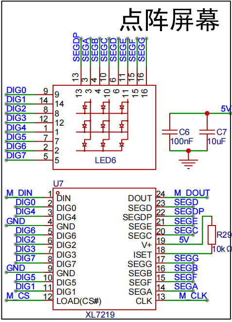</p><p data-lake-id="uedc5fa1b" id="uedc5fa1b"><span data-lake-id="u28ca7be5" id="u28ca7be5">MAX7219（XL7219）</span></p><h3 data-lake-id="PvzER" id="PvzER"><span data-lake-id="u9f4c9f1e" id="u9f4c9f1e">点阵屏种类</span></h3><h4 data-lake-id="gKnEx" id="gKnEx"><span data-lake-id="u1132a404" id="u1132a404">共阴</span></h4><p data-lake-id="u3b9b4dec" id="u3b9b4dec">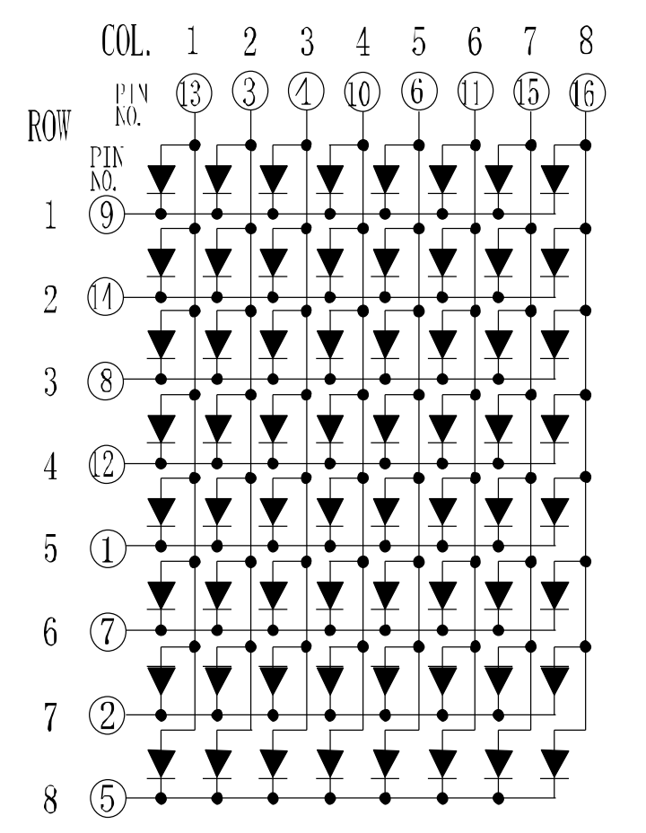</p><h4 data-lake-id="KWWas" id="KWWas"><span data-lake-id="ue9aa2e17" id="ue9aa2e17">共阳</span></h4><p data-lake-id="uec02cc0e" id="uec02cc0e">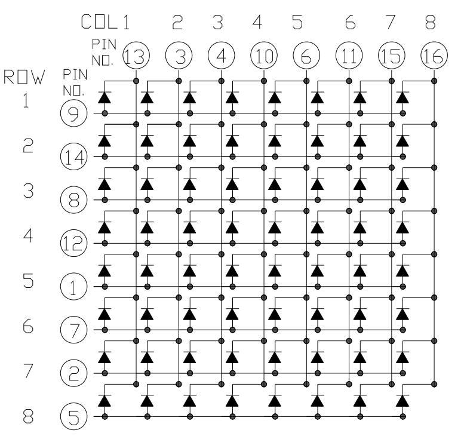</p><h3 data-lake-id="xHIcf" id="xHIcf"><span data-lake-id="u3c8d739c" id="u3c8d739c">MAX7219驱动</span></h3><p data-lake-id="u55ec173c" id="u55ec173c">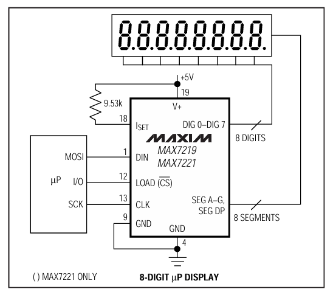</p><p data-lake-id="u82c70223" id="u82c70223"><span data-lake-id="ud7a40c5f" id="ud7a40c5f">官方手册描述的是如何驱动8个8的数码管。</span></p><p data-lake-id="ua608c922" id="ua608c922"><span data-lake-id="u6ad75c83" id="u6ad75c83">总共有16条线接入数码管。</span></p><p data-lake-id="u733bef08" id="u733bef08"><span data-lake-id="u74bd3354" id="u74bd3354">和mcu通信的是三条：</span></p><ul list="u9b4b9caa"><li data-lake-id="u9b58c3b4" fid="u1912a8c6" id="u9b58c3b4"><span data-lake-id="ud2881e27" id="ud2881e27">clk: 时钟</span></li><li data-lake-id="u1a17bbdb" fid="u1912a8c6" id="u1a17bbdb"><span data-lake-id="uaf314e0a" id="uaf314e0a">mosi：输出</span></li><li data-lake-id="u9a194bba" fid="u1912a8c6" id="u9a194bba"><span data-lake-id="uf5d08179" id="uf5d08179">cs：片选</span></li></ul><h4 data-lake-id="SSAQL" id="SSAQL"><span data-lake-id="u741e293f" id="u741e293f">Segment（段）</span></h4><p data-lake-id="u6965b32f" id="u6965b32f"><span data-lake-id="ufed9db19" id="ufed9db19">如果以888数码管为例，段指的是1个8上的所有灯</span></p><p data-lake-id="u7d6a1c5d" id="u7d6a1c5d">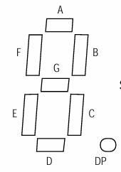</p><p data-lake-id="u15bb6988" id="u15bb6988"><code data-lake-id="u6476aa55" id="u6476aa55"><span data-lake-id="uc1bd70d2" id="uc1bd70d2">A</span></code><span data-lake-id="uf402cd5f" id="uf402cd5f">、</span><code data-lake-id="ueb7e27e7" id="ueb7e27e7"><span data-lake-id="u4ac57b7a" id="u4ac57b7a">B</span></code><span data-lake-id="u58fb035e" id="u58fb035e">、</span><code data-lake-id="u405393af" id="u405393af"><span data-lake-id="u5d607466" id="u5d607466">C</span></code><span data-lake-id="udc70d1c2" id="udc70d1c2">、</span><code data-lake-id="u0c7ee462" id="u0c7ee462"><span data-lake-id="ubf670430" id="ubf670430">D</span></code><span data-lake-id="u688e706f" id="u688e706f">、</span><code data-lake-id="ub4a7af62" id="ub4a7af62"><span data-lake-id="u935b43a6" id="u935b43a6">E</span></code><span data-lake-id="u984f4d87" id="u984f4d87">、</span><code data-lake-id="ub38d131e" id="ub38d131e"><span data-lake-id="ucf91f926" id="ucf91f926">F</span></code><span data-lake-id="uf784eaae" id="uf784eaae">、</span><code data-lake-id="u743d9f51" id="u743d9f51"><span data-lake-id="uec6d58d1" id="uec6d58d1">G</span></code><span data-lake-id="ub2d189f4" id="ub2d189f4">、</span><code data-lake-id="ueb274a1a" id="ueb274a1a"><span data-lake-id="u0f58ae2f" id="u0f58ae2f">DP</span></code><span data-lake-id="ueed95703" id="ueed95703">总共为8个段。</span></p><p data-lake-id="ubc568f57" id="ubc568f57"><span data-lake-id="u48a0b913" id="u48a0b913">​</span><br/></p><p data-lake-id="ua9d1d2a2" id="ua9d1d2a2"><span data-lake-id="uce8f0c23" id="uce8f0c23">如果以 点阵屏为例，一</span><code data-lake-id="uffbb47ce" id="uffbb47ce"><span data-lake-id="ucde3f0c9" id="ucde3f0c9">行</span></code><span data-lake-id="ub6911080" id="ub6911080">中的灯为 段。</span></p><p data-lake-id="u0fcda9fb" id="u0fcda9fb">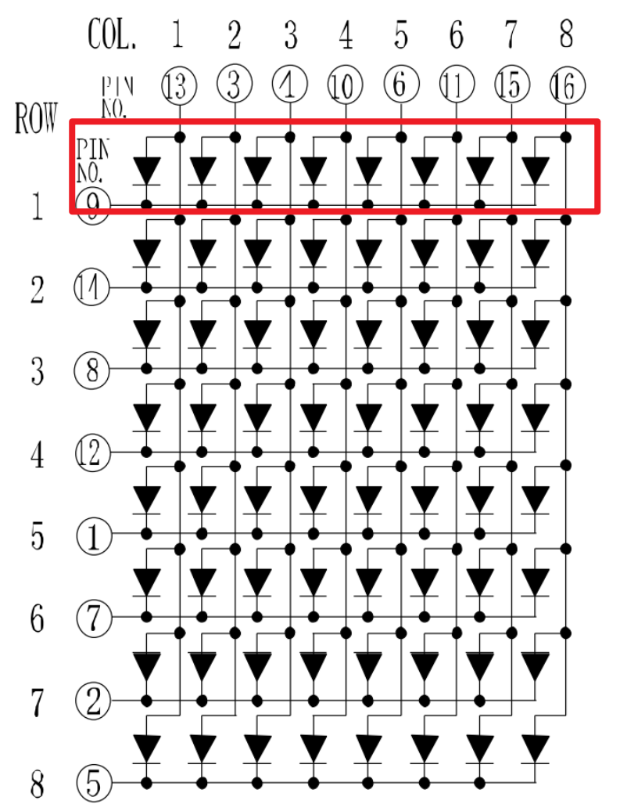</p><h4 data-lake-id="ANUi2" id="ANUi2"><span data-lake-id="u30cbf3f9" id="u30cbf3f9">Digits（位）</span></h4><p data-lake-id="uaad220c1" id="uaad220c1"><span data-lake-id="ud8617cd7" id="ud8617cd7">位，可以理解为位置，也就是哪一个的意思。</span></p><p data-lake-id="u7ea43839" id="u7ea43839"><span data-lake-id="u268bb0d8" id="u268bb0d8">如果以888数码管为例，位指的是8个8中的哪一个：</span></p><p data-lake-id="uc31a9407" id="uc31a9407">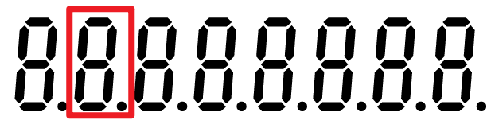</p><p data-lake-id="uad88f8e7" id="uad88f8e7"><br/></p><p data-lake-id="u95bc0a1f" id="u95bc0a1f"><span data-lake-id="u2a561095" id="u2a561095">如果以 点阵屏为例，表示选择哪一</span><code data-lake-id="u398c5c8c" id="u398c5c8c"><span data-lake-id="u62e6c835" id="u62e6c835">行</span></code><span data-lake-id="u4637ab8c" id="u4637ab8c">的灯。</span></p><p data-lake-id="u2897faad" id="u2897faad">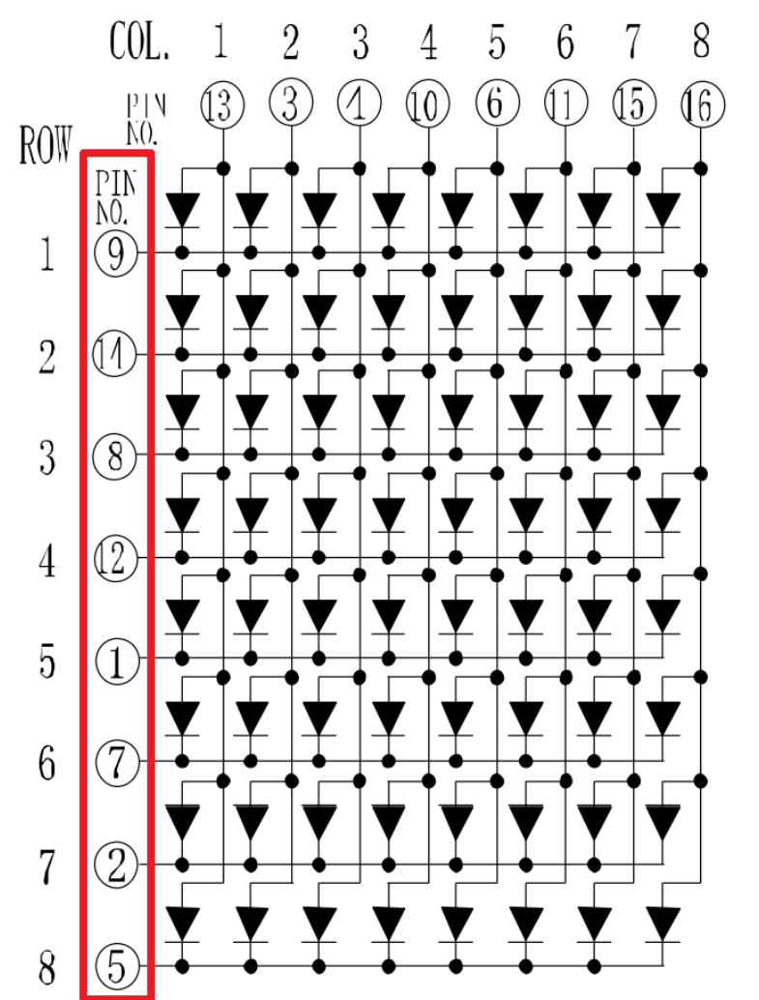</p><h4 data-lake-id="StrCd" id="StrCd"><span data-lake-id="u3a6dde5a" id="u3a6dde5a">数据接口</span></h4><p data-lake-id="ua0f77327" id="ua0f77327">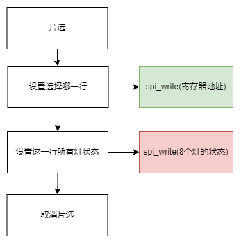</p><p data-lake-id="u168d796d" id="u168d796d"><span data-lake-id="ud381296c" id="ud381296c">数据设置需要按行来设置，进行逐行配置。</span></p><h4 data-lake-id="j8NM4" id="j8NM4"><span data-lake-id="ub4999dc7" id="ub4999dc7">菊花链</span></h4><p data-lake-id="uf3a28403" id="uf3a28403">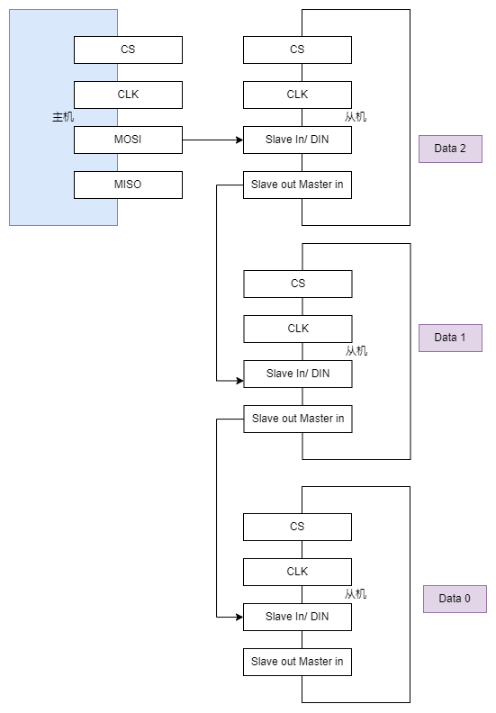</p><p data-lake-id="u3538c375" id="u3538c375"><span data-lake-id="uf28a2cb6" id="uf28a2cb6">菊花链是为了解决同时出现多个点阵屏的问题出现的。</span></p><p data-lake-id="u14975094" id="u14975094"><span data-lake-id="uc296c33f" id="uc296c33f">如果是多个灯，就用第一个的out接第二个的in，数据发送规则如下：</span></p><p data-lake-id="u71ce9fb7" id="u71ce9fb7">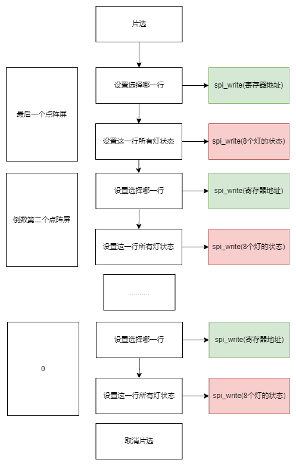</p><h4 data-lake-id="DFiuw" id="DFiuw"><span data-lake-id="u7c79ea32" id="u7c79ea32">寄存器说明</span></h4><p data-lake-id="u491b7aa4" id="u491b7aa4">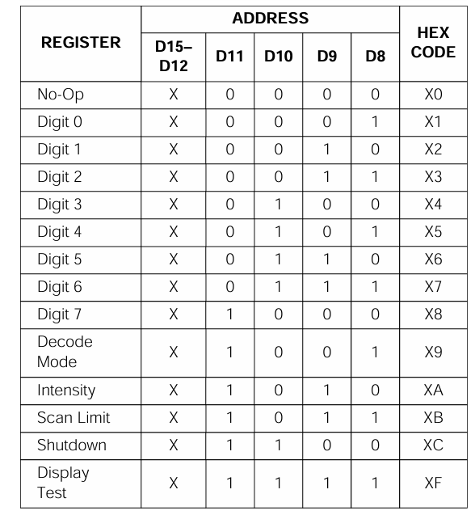</p><p data-lake-id="ub6566028" id="ub6566028"><span data-lake-id="u5cd48995" id="u5cd48995">寄存器访问格式：</span></p><span class="yuque-card-unsupported">[codeblock]</span><ul list="u270b73fa"><li data-lake-id="ubd8f8cc9" fid="ue536862e" id="ubd8f8cc9"><span data-lake-id="u9017e3f5" id="u9017e3f5">寄存器地址如上图，占1个byte</span></li><li data-lake-id="u96ce585a" fid="ue536862e" id="u96ce585a"><span data-lake-id="uc1fbd6d8" id="uc1fbd6d8">值对应1个byte。</span></li></ul><p data-lake-id="u7394e2a3" id="u7394e2a3"><span data-lake-id="u9e9e1866" id="u9e9e1866">其中， Digit0-7表示去设置哪一行点阵屏，对应的值表示这一行上灯的状态，值是1个byte8个bit，可以表示8个灯的状态。</span></p><p data-lake-id="ub0fba50d" id="ub0fba50d">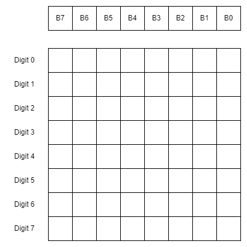</p><h3 data-lake-id="zoyrd" id="zoyrd"><span data-lake-id="u3f07c95f" id="u3f07c95f">代码实现</span></h3><h4 data-lake-id="w5GVj" id="w5GVj"><span data-lake-id="ub586cfd4" id="ub586cfd4">初始化</span></h4><span class="yuque-card-unsupported">[codeblock]</span><ul list="ud2c39863"><li data-lake-id="u4bc6e075" fid="ubc8419c3" id="u4bc6e075"><span data-lake-id="ue650605e" id="ue650605e">译码方式</span></li><li data-lake-id="u7fc5696b" fid="ubc8419c3" id="u7fc5696b"><span data-lake-id="u796fa429" id="u796fa429">亮度调节</span></li><li data-lake-id="u19946b91" fid="ubc8419c3" id="u19946b91"><span data-lake-id="ud84abc4d" id="ud84abc4d">扫描界限</span></li><li data-lake-id="u3c3fdc77" fid="ubc8419c3" id="u3c3fdc77"><span data-lake-id="u3145b768" id="u3145b768">掉电模式</span></li></ul><p data-lake-id="uf78e7241" id="uf78e7241"><span data-lake-id="u3959912b" id="u3959912b">​</span><br/></p><h4 data-lake-id="gB14R" id="gB14R"><span data-lake-id="u3b5731ec" id="u3b5731ec">点灯显示</span></h4><span class="yuque-card-unsupported">[codeblock]</span><span class="yuque-card-unsupported">[codeblock]</span><span class="yuque-card-unsupported">[codeblock]</span><p data-lake-id="uac04c24a" id="uac04c24a"><br/></p><h4 data-lake-id="JxBkp" id="JxBkp"><span data-lake-id="ubdbebd4e" id="ubdbebd4e">码表</span></h4><span class="yuque-card-unsupported">[codeblock]</span><p data-lake-id="u6f9e75b0" id="u6f9e75b0"><br/></p><h4 data-lake-id="Vn1EO" id="Vn1EO"><span data-lake-id="u8c5977d9" id="u8c5977d9">完整代码</span></h4><span class="yuque-card-unsupported">[codeblock]</span><span class="yuque-card-unsupported">[codeblock]</span><h2 data-lake-id="LsjxM" id="LsjxM"><span data-lake-id="ue5e19859" id="ue5e19859">练习题</span></h2><ol list="uc1f9f3cf"><li data-lake-id="u0f5f8fc2" fid="u20eaa3b5" id="u0f5f8fc2"><span data-lake-id="u84a2ccb9" id="u84a2ccb9">实现点阵驱动</span></li></ol>